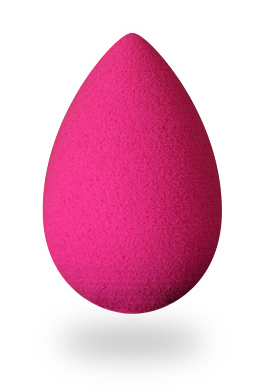
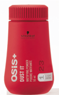
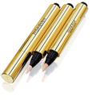
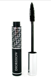
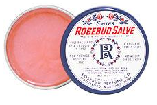
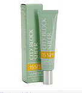
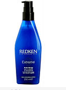
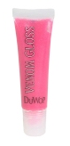
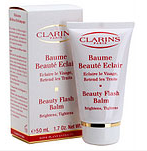

här kommer 10 sminkprodukter som är mina favoriter
1. beauty blender

Fingrar som appliceringsverktyg i all ära, men den lilla rosa make up-svampen från Beautyblender är svårslagen. Formad som ett litet ägg funkar den att dölja finnar och skapa rosor på kinderna med. Eftersom den saknar kanter är risken för randig make up minimal
2. Clinique 7 Day Scrub Cream

Glöm peelings med fjuttiga mikrokorn. Cliniques 7 Day Scrub Cream river rejält utan att irritera, tar bort döda hudceller och gör den redo för en eventuell ansiktsmask. Ett måste i badrumsskåpet
3. Yves Saint Laurent Touch Eclat No1

Yves Saint Laurents flerfaldigt prisbelönade concealer Touch Eclat har en given plats i necessären. Effektivare medel för mörka ringar under ögonen finns inte. Dyr men dryg
4. Diorshow

Maxihylsan med maxiborsten är inte något för dig som gillar att spara på krutet. Har du relativt långa fransar får du garanterat lösögonfranseffekt av Diors Diorshow.
5. Rosebudsalve

hollywoodkändisarna och modellernas hemliga skönhetsknep heter Rosebudsalve. En rosendoftande universalsalva som funkar från allt från ögonbrynsfixering till spruckna läppar
7. Clinique City Block Sheer spf 15

Nästan 90% av hudens åldrande beror på solens strålning. Förhindra för tidigt åldrande genom att bära solskyddsfaktor varje dag. City Block Sheer har en lätt formula som inte klippar och passar perfekt under make upen
8. Redken Extre Anti-Snap

För alla som missbrukar plattången finns räddning. Extreme Anti-Snap är en effektiv hårkur för skadat och poröst hår. Den proteinrika formulan bygger upp hårstrået. Dessutom doftar den supergott!
9. DuWop Venom Gloss

Kanske beror det på den glasklara glansen, kanske på den lite ”stickande” känslan. Vad som i alla fall är säkert är att läpparna känns tillfälligt större. Venom Gloss är en partyfavorit och finns i flera fina färger. ”Lantana” ger de perfekta rosa läpparna – storfavorit på redaktionen!
10. Clarins Beauty Flash Balm

Råd bot på glåmig hy och fina linjer med askungekrämen Beauty Flash Balm. Använd som ansiktsmask (applicera tunt och låt verka) eller som uppstramande primer. Ett måste innan och dagen efter festen.
det här är i samarbete med veckorevyn där allt detta går att köpa. har själv allt och älskar det